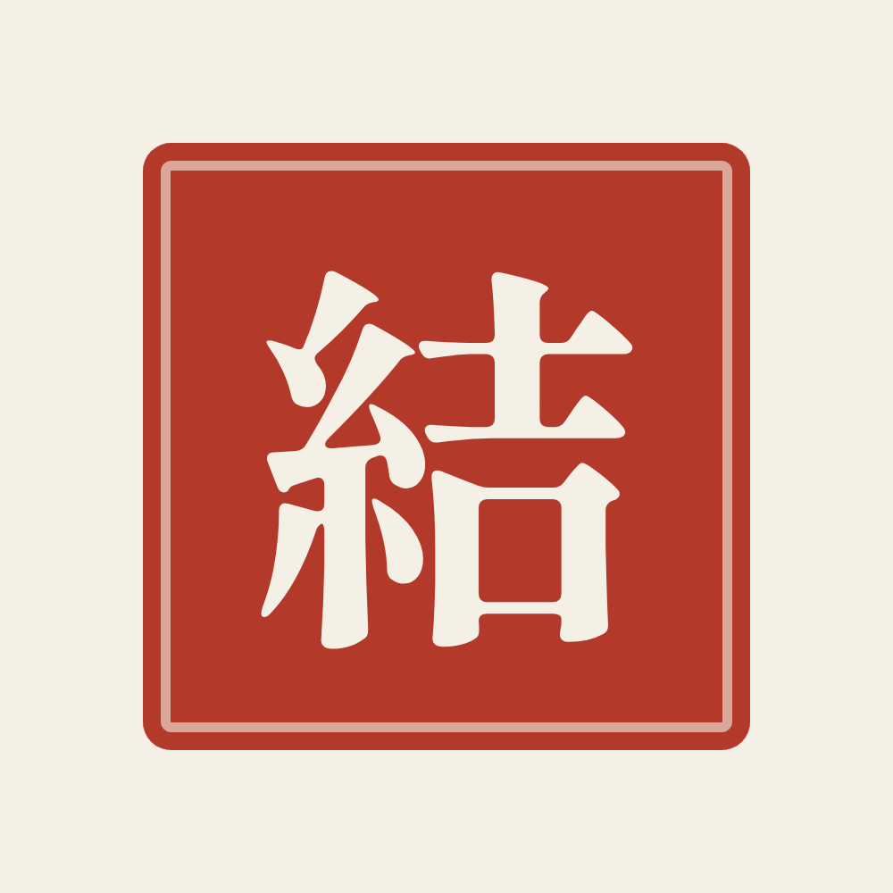
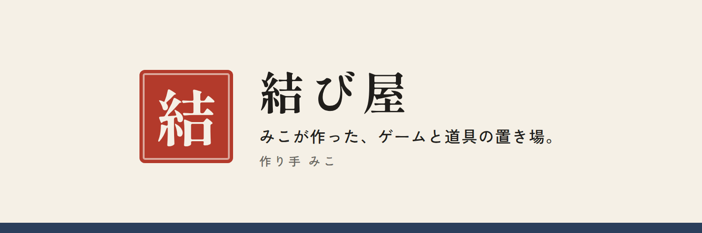

OFUSE 登録の手引き（結び屋）
登録と操作はお母さん、作るものの中身はみこが用意しました。上から順に進めてください。
画面の言葉は、この手引きと少し違うことがあります。迷ったら、近い言葉のボタンを選んでください。
用意しておくもの
- スマホ（またはパソコン）とメールアドレス
- 本人確認書類（運転免許証など。求められたときに使います）
- お金を受け取る銀行口座（名義は、登録する氏名と同じもの）
- この手引きと、画像 2 枚（icon.png、header.png）
1. アカウントを作る
- ブラウザで ofuse.me を開きます。
- 「クリエイターとしてはじめる」または「新規登録」を押します。
- 登録のしかたを選びます。メールアドレスか Google がおすすめです。
- メールで届いた確認のリンクを押して、登録を有効にします。
2. 名前（ニックネーム）を入れる
ここで入れた名前が、OFUSE のページに表示されます。上から順に試してください。
結び屋
使えなかったら → 結び屋（作り手 みこ） → 結び屋 musubiya
3. 活動ジャンルを選ぶ
1〜3 個選べます。近いものを選んでください（例：ゲーム、ツール・アプリ、Web など）。
4. 本人の情報を入れる
- 「個人」か「法人」かを選びます。会社にしていなければ「個人」です。
- 氏名・住所・電話番号を、お母さんご本人のもので入れます。
これらは本人確認とお金のやり取りのための情報です。表示されるのは 2 の名前です。念のため、画面に「公開されません」とあるか見ておいてください。
- 本人確認書類を求められたら、写真を撮って送ります。
5. 受け取りの口座を入れる
銀行名・支店・口座番号・名義を入れます。名義は 4 の氏名と同じでないと受け取れません。
6. ページの ID（URL）を決める
英数字で決める ID が、ページの URL（ofuse.me/〇〇〇）になります。上から順に試してください。
musubiya
使えなかったら → musubiyamiko → musubiya2026
7. プロフィールを整える
設定やプロフィールの編集の画面で入れます。
アイコン：icon.png ヘッダー（カバー）：header.png


紹介文（長い版。入らなければ短い版）。長押しでコピーして貼り付けます。
結び屋は、みこが作るゲームと道具の置き場です。攻略の計算ツール、紙の仕事を減らす道具、制作中のスマホ向けゲーム。道具はどれも無料で使えます。役に立ったら、お気持ちとして、応援として届けてもらえるとうれしいです。いただいたお気持ちは、結び屋の道具づくりに使います。作り手：みこ
https://musubiya-miko.com/
短い版
みこが作るゲームと道具の置き場「結び屋」です。道具は無料のまま。役に立ったら、お気持ちと応援をお寄せください。作り手：みこ
https://musubiya-miko.com/
8. 確かめて、みこに知らせる
- 使えた名前：＿＿＿＿＿＿＿＿
- ページの URL：ofuse.me/＿＿＿＿＿＿
- 手数料が今もこの額か：単発の応援 16%、出金 1 回 275 円
- 利用規約に、ものやサービスの「対価」として受け取ってはいけない、と書かれていないか
- 画像の大きさの指定（違ったら教えてください。作り直します）
URL が分かったら、みこが結び屋のホームに入口をつなげます。
9. お金のこと
| 届いた額 | 手数料 16% | 手元に入る額 |
|---|
| 100 円 | 16 円 | 84 円 |
| 500 円 | 80 円 | 420 円 |
| 1,000 円 | 160 円 | 840 円 |
出金は 1 回ごとに 275 円かかります。ある程度たまってから、まとめて出してください。
届いたお金は結び屋の売上なので、帳簿に付けておいてください。